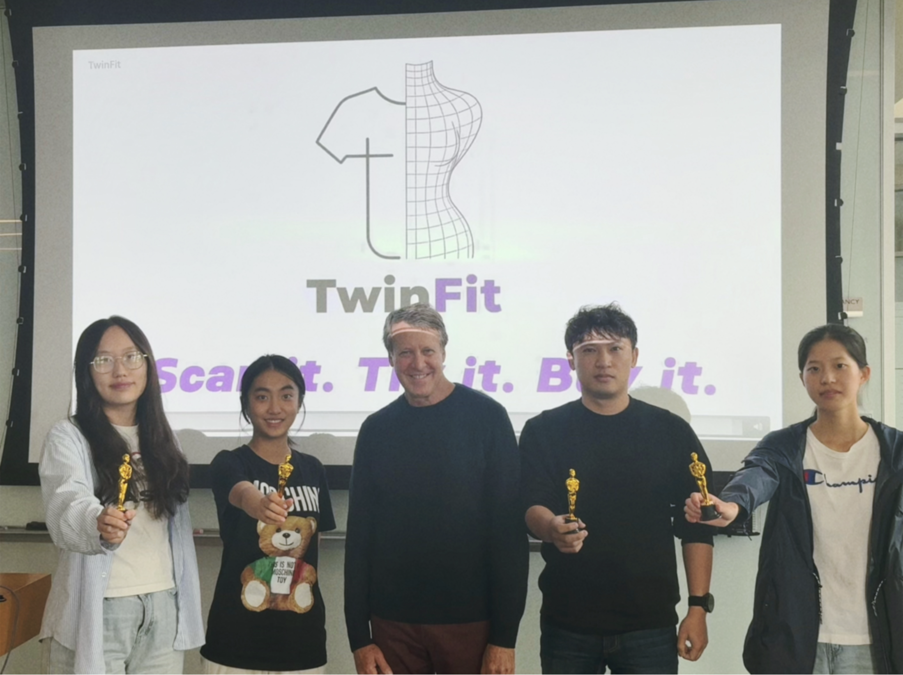

Class MonitorClass MonitorLed a 42-student class and served as the primary organizer for at least 7 class activities and meetings
Startup Program — TwinFit: AI-Powered Virtual Try-On & Sizing PlatformMain contributor to project developmentProposed the TwinFit solution.Conducted customer discovery and developed customer personas.Designed the market analysis and beachhead strategy.Filmed and edited the pitch video, which won the Best Pitch Video Award.View our final pitch slides ↗Pitch videoYour browser does not support embedded video. Open the pitch video.Our TwinFit team (sadly with two of our members absent)